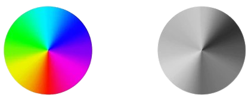

Monocromatismo
|
Se define al monocromatismo como la capacidad de percibir
únicamente la intensidad de la luz, es decir, que no se
percibe colores, y únicamente se ve en escala de gris.
Se puede presentar de diversas formas: |
 |
Monocromacia de bastones
También referido como “acromatopsia”. En este caso, la visión depende únicamente de los bastones y los conos no suelen funcionar en absoluto, aunque a veces hay ausencia de conos, una distribución irregular o formas anormales. Se estima que la incidencia oscila entre 1:30.000 y 1:50.000, aunque no es el tipo más raro. Este se basa en una herencia autosómica recesiva, es decir, se necesitan dos cromosomas defectuosos y se distribuye por igual entre hombres y mujeres. La acromatopsia se caracteriza por los siguientes síntomas:
- Incapacidad total para diferenciar colores
- Sensibilidad grave a la luz (fotofobia)
- Hipermetropía
- Movimientos oculares involuntarios (nistagmo)
- Visión central deprimida (escotoma)
Monocromacia de conos azules
| Esta rara forma de monocromatismo se debe a la pérdida o reordenamiento de los genes que codifican los conos rojos y verdes. Por ello, solo los receptores del color azul (longitud corta) y los bastones transmiten información sobre el color y/o el brillo. Al tener monocromía de conos azules, generalmente se es completamente daltónico. Sin embargo, en situaciones de penumbra, donde los bastones y los conos azules funcionan, la percepción del color puede compararse con la visión dicromática. |  |
Existen informes sobre formas muy diferentes de monocromía de conos azules y, a veces, no es fácil diferenciarla de la monocromía de bastones. No se dispone de un número exacto de incidencias. Los científicos estiman la frecuencia en 1:100.000 en hombres. Dado que los conos rojos y verdes están codificados en el cromosoma sexual, los patrones de herencia son similares al daltonismo rojo-verde. Se desconocen los casos en mujeres.